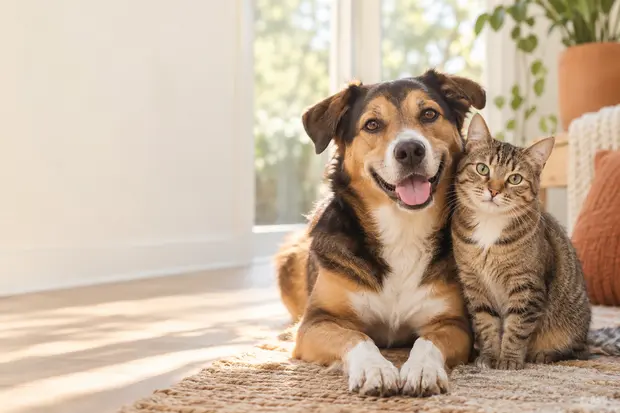

紧急
楼道里的橘猫需要临时安置
左前腿疑似受伤，愿意亲近人，目前有居民提供饮水。
💬 8 条讨论
每一个生命都值得被看见
在这里发布真实的猫狗救助信息，也遇见正在等待家庭的它。一次关注、一次伸手，都可能成为归家路上的转折。

救助广场
真实呈现发现地点、健康情况和当前进展。选择分类了解详情，也可以在评论区提供线索与帮助。
左前腿疑似受伤，愿意亲近人，目前有居民提供饮水。
无项圈，精神状态尚可，正在寻找主人或临时寄养。
已驱虫、接种首针疫苗，安静亲人，可以进入领养流程。
从临时救助到正式领养，豆包完成了健康检查和家庭适配。
领养中心
先认识，再决定。每张卡片都将补充完整的健康、性格与领养要求。
1岁 · 上海 · 温柔慢热 · 已绝育
8个月 · 苏州 · 安静亲人 · 已驱虫
2岁 · 杭州 · 活泼好奇 · 疫苗齐全
2岁 · 南京 · 稳定亲人 · 已绝育
1岁半 · 上海 · 聪明热情 · 疫苗齐全
3岁 · 苏州 · 安静稳重 · 已绝育
透明领养
领养不是即时领取。清晰的步骤帮助送养人与申请人充分沟通，也保护动物的长期生活质量。
填写居住、养宠经验与领养原因。
核对基本情况和领养条件。
确认双方适配并进入沟通阶段。
进一步了解动物和家庭情况。
完成交接，让它正式抵达新家。
经过检查、治疗和一个月的临时照护，小满终于在新家的窗边找到了最喜欢的位置。
发布求助
请尽量提供清晰照片、准确地点和真实现状。完整的信息可以帮助其他人更快判断能够提供什么帮助。
发现需要帮助的动物？
整理现场情况与照片，让信息更快被看见。
发布求助提供一点支持
当前版本仅演示捐赠流程，不会产生真实交易。
动物详情
这里将完整展示所在地、性别、年龄、健康情况、疫苗与绝育情况、性格、救助经历、领养要求和当前状态。
模拟捐赠
选择猫粮或狗粮，并输入希望支持的金额。本页面不会产生真实交易。